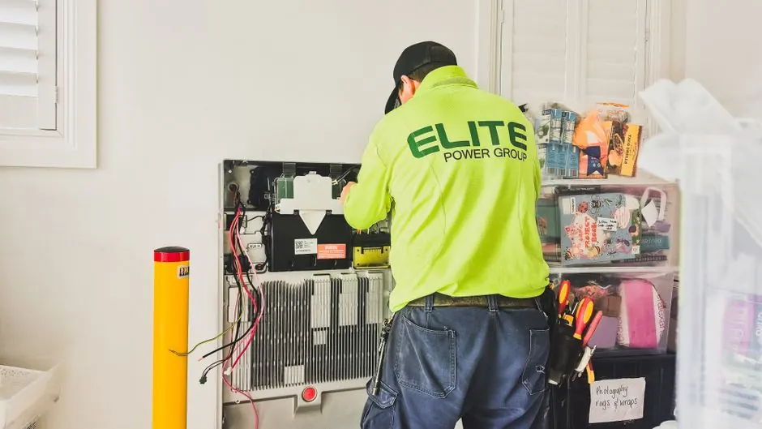
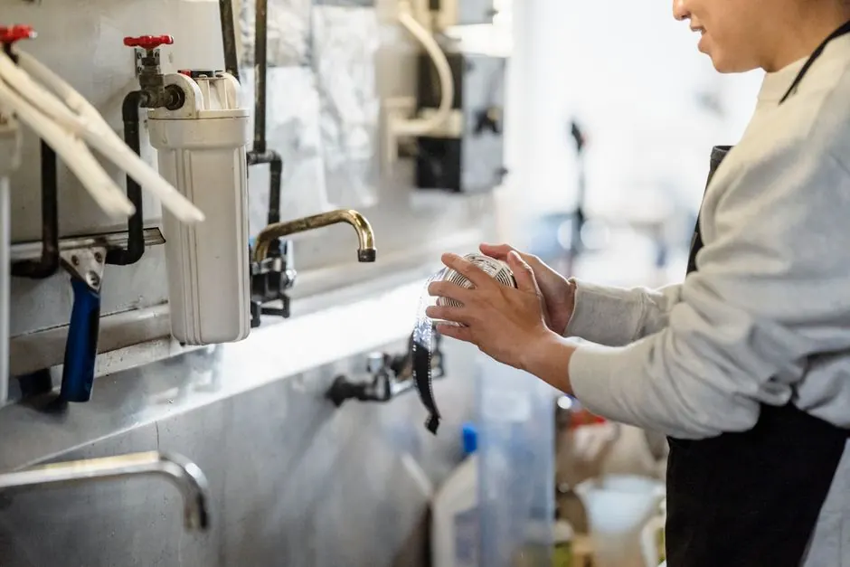
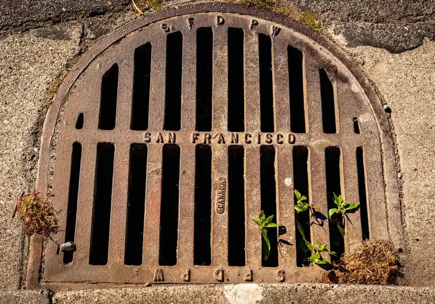
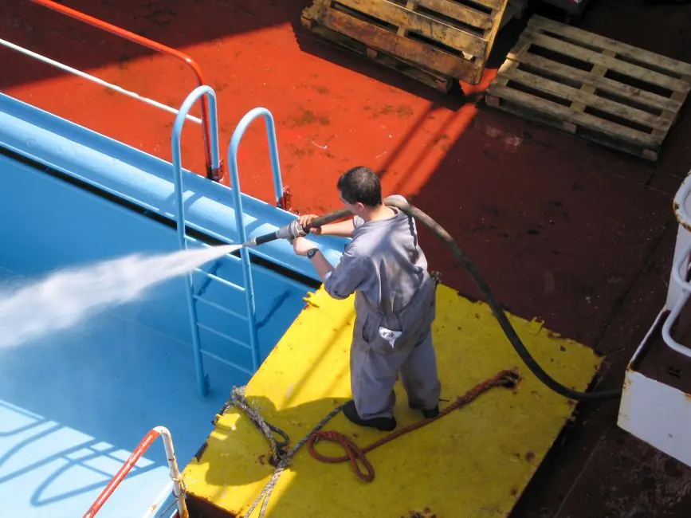

Drain Cleaning TipsHow to Recognize Early Signs of a Clogged Drain
Catching drainage restrictions before they escalate into indoor backups saves significant time and money. Learn the 4 telltale early indicators.

Practical drain maintenance advice, diagnostic guides, and sewer care information for homeowners and property managers throughout Naples, Florida.

Drain Cleaning TipsCatching drainage restrictions before they escalate into indoor backups saves significant time and money. Learn the 4 telltale early indicators.
Fats, oils, grease (FOG), coffee grounds, and soap scum cling to pipe walls. Discover safe clearing techniques and prevention habits.

Hydro Jetting GuidesShould you snake or hydro-jet your pipes? Understand how mechanical cabling punches holes while hydro jetting scours the entire pipe wall clean.

Kitchen & Bath CareToothpaste buildup, hair strands, and pop-up stopper debris often choke vanity traps. Learn how to clean pop-ups and restore rapid flow.
 Sewer Line Maintenance
Sewer Line Maintenance
When toilets gurgle while washing machines drain, or bathtubs back up simultaneously, the issue lies in your main sewer lateral.
 Sewer Line Maintenance
Sewer Line Maintenance
High-definition fiber optic cameras reveal root penetration, pipe shifting, and belly sags without destructive excavation.
Commercial restaurants face strict grease trap regulations and high line volumes. Discover preventative hydro-jetting schedules.
 Naples Local Guides
Naples Local Guides
Exploring the unique plumbing demands of coastal estate pipe runs, historic cast iron lines, and mature tropical root canopies.
 Naples Local Guides
Naples Local Guides
Understanding multi-story vertical condo waste stacks, tidal canal soil settlement, and North Naples subdivision drainage management.
Try searching for terms like "grease", "roots", "jetting", "sink", or "sewer".
If you are experiencing recurring clogs, foul sewer odors, or slow drains, our licensed local technicians are ready to help with same-day dispatch.

Have a question about persistent drain problems or want to schedule a sewer camera inspection in Naples? Send us a message.